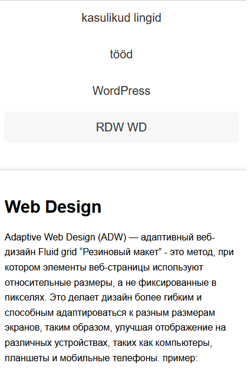
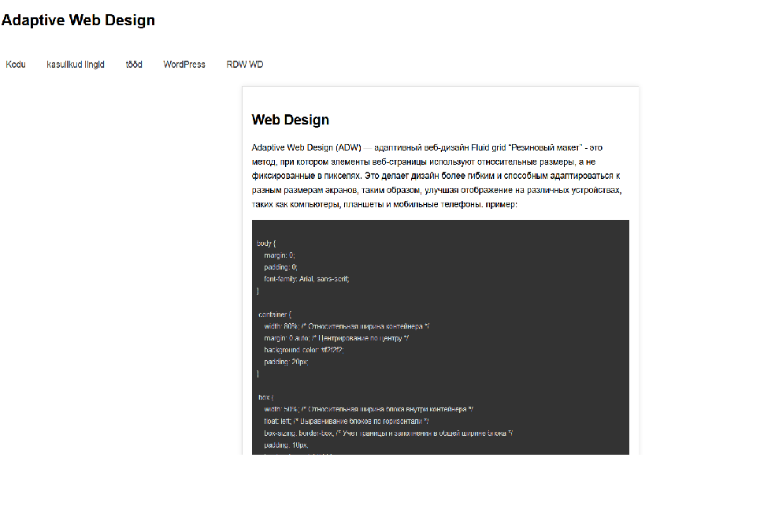

Web Design
Adaptive Web Design (ADW) — адаптивный веб-дизайн Fluid grid “Резиновый макет” - это метод, при котором элементы веб-страницы используют относительные размеры, а не фиксированные в пикселях. Это делает дизайн более гибким и способным адаптироваться к разным размерам экранов, таким образом, улучшая отображение на различных устройствах, таких как компьютеры, планшеты и мобильные телефоны. пример:
body { margin: 0; padding: 0; font-family: Arial, sans-serif; } .container { width: 80%; /* Относительная ширина контейнера */ margin: 0 auto; /* Центрирование по центру */ background-color: #f2f2f2; padding: 20px; } .box { width: 50%; /* Относительная ширина блока внутри контейнера */ float: left; /* Выравнивание блоков по горизонтали */ box-sizing: border-box; /* Учет границы и заполнения в общей ширине блока */ padding: 10px; border: 1px solid #ddd; margin: 10px; } @media (max-width: 768px) { .box { width: 100%; /* Полная ширина блока на устройствах с шириной экрана до 768px */ } }
картинка сайта:


Определение макета в адаптивном дизайне включает в себя:
Исследование аудитории: Понимайте, какие устройства использует ваша аудитория.
Гибкие сетки: Используйте проценты, чтобы макет мог адаптироваться к разным экранам.
Медиазапросы: Устанавливайте стили в зависимости от характеристик устройства.
Тестирование: Проверяйте макет на разных устройствах.
Прогрессивное улучшение: Добавляйте функционал постепенно.
Адаптивные изображения: Используйте srcset для разных размеров изображений.
Тестирование производительности: Убедитесь, что сайт загружается быстро. используют несколько шаблонных размеров – – для планшетов 764px
-для смартфонов -320px
-для десктоп браузеров -1680px
Вывод: Какой дизайн лучше? Почему? на англ и русском языке!